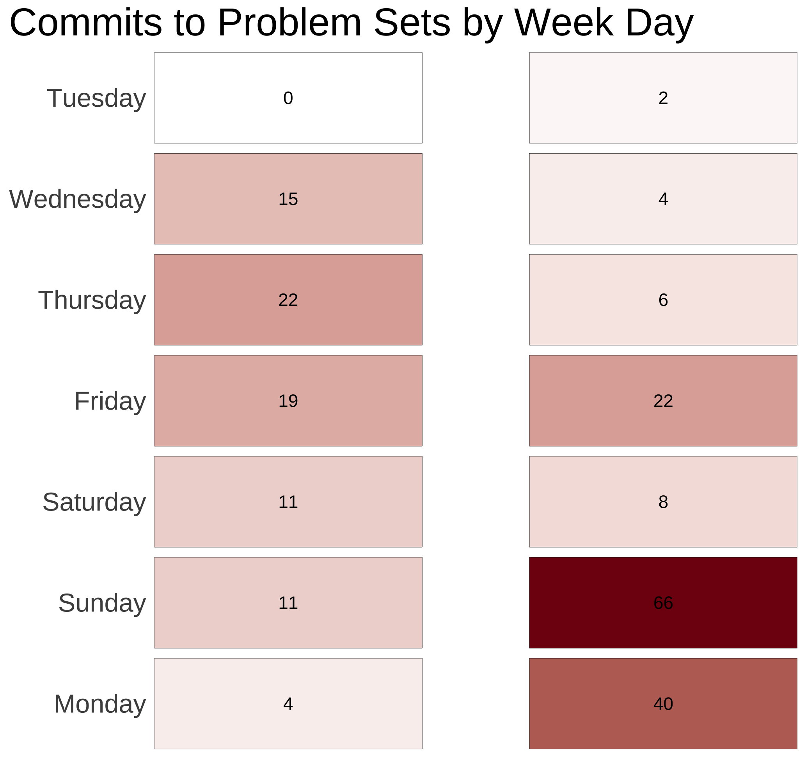

04:00
Describing Relationships
Data Analytics and Visualization with R
Session 3
Your GitHub Stats 🤓


Anatomy of a Boxplot

What is Statistics?
Use a sample to make inferences about a population

Terminology
- Estimand: the true value of the parameter in the population (unknown)
- Estimate: a value which is our best guess about a parameter based on our sample
- Estimator: the function (procedure) we apply to get the estimate

Conditional (Marginal) Distributions
A conditional distribution is the distribution of one variable given the value of another variable

Covariance: Illustration


Correlation Values
| r | Rough meaning |
|---|---|
| ±0.1–0.3 | Modest |
| ±0.3–0.5 | Moderate |
| ±0.5–0.8 | Strong |
| ±0.8–0.9 | Very strong |

Correlograms
Heatmaps

Points

Cookies and Happiness (again)

Prediction Ignoring Number of Cookies Eaten

Fitting the Line Through Every Observation

LOESS Curve

OLS Regression Line

Regression Line Explains Variance in Y with X

Explained vs. Unexplained Variance


The Dangers of Dual y-axes

Example from The Economist

Fine When They Measure the Same Thing

Adding a second scale in ggplot2

ggplot(
weather,
aes(x = datetime, y = tempmax)
) +
geom_line() +
geom_smooth() +
scale_y_continuous(
sec.axis =
sec_axis(
trans = ~ (. * 9 / 5) + 32,
name = "Fahrenheit"
)
) +
labs(
x = NULL, y = "Celsius",
title = "Daily high temperatures in Mannheim",
subtitle = "January 1 2021–December 31, 2021",
caption = "Source: visualcrossing.com"
)Adding a second scale in ggplot2

Alternative: Use Multiple Plots

library(patchwork)
temp_plot <- ggplot(
weather,
aes(x = datetime, y = tempmax)
) +
geom_line() +
geom_smooth() +
labs(
x = NULL,
y = "Temperature (ºC)"
)
humid_plot <- ggplot(
weather,
aes(x = datetime, y = humidity)
) +
geom_line() +
geom_smooth() +
labs(
x = NULL,
y = "Humidity (%)"
)
temp_plot + humid_plot +
plot_layout(
ncol = 1,
heights = c(0.7, 0.3)
)To-Do List
- Problem Set 3 (Visualization and Data Wrangling)
- Readings/videos for week 4 (Intro to Causality)